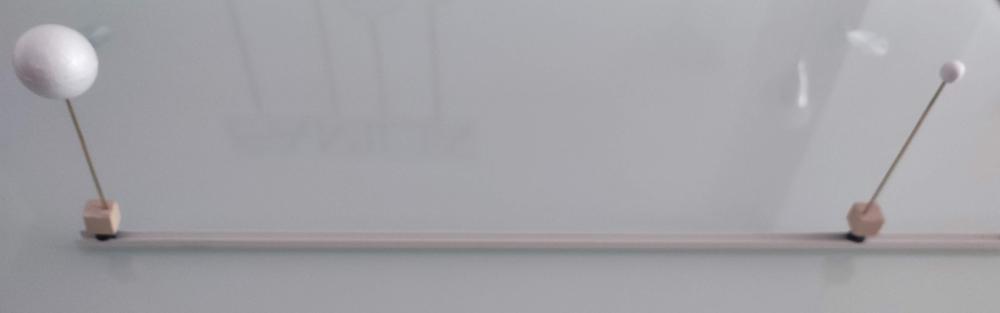

Simulador de eclipses
En esta actividad construiremos un modelo a escala de la Tierra y la Luna. Utilizaremos el Sol para producir eclipses de Sol y de Luna sobre una bolita de poliespán.
Podemos considerarla una continuación de la actividad "El tamaño del Sol y de la Luna en el cielo" que vimos en el apartado 4 (El Sistema Sol-Tierra-Luna). En esa actividad vimos como una pelota de poliespán de tamaño de 0,6 cm, nos producía un eclipse a 60 cm de distancia de nuestro ojo.
- En esta actividad, estamos doblando la distancia, Si queremos mantener la proporción, ¿qué diámetro debe de tener la pelota de poliespán que utilicemos como Luna en este modelo?
¿Comenzamos?
1. Necesidades
- Perfil en U de 1,30 m
- Conteras de goma que encajen en el perfil
- Palitos de pinchito
- Bola de poliespán de 4 cm, será nuestra Tierra.
- Bola de poliespán de 1 cm, será nuestra Luna.
2. Procedimiento de construcción
- Haz una marca a 5 cm de uno de los extremos del perfil. Será la posición de la Tierra.
- Haz una marca a 5 cm del otro extremo. Será la posición de la Luna.
- Coloca la contera en ese punto de manera que encaje perfectamente en el perfil y no se mueva. La contera está abierta y el pinchito de madera encajará en él.
- Coloca el palito de pinchito sobre las conteras. Si no encaja, puedes rellenarla de plastilina o utilizar pegamento para que quede perfectamente sujeto dentro de la contera.
- Coloca las bolas de la Tierra y la Luna sobre los pinchitos, de manera que no se caigan. Si es necesario utiliza un poco de pegamento.
- Comprueba que se cumplen las proporciones para el tamaño relativo y la distancia entre la Tierra y la Luna.

Ya tienes tu modelo a escala de la Tierra y la Luna.
3. Probamos nuestro modelo
Comprobamos la formación de la umbra y la penumbra.
- Cogemos nuestro modelo de manera que la bola más grande proyecte sombra sobre el suelo.
- Si alejamos la bola que proyecta la sombra del suelo, vemos que la sombra no está definida. Prácticamente todo es penumbra.
- A medida que nos vamos acercando, la sombra de la bola sobre el suelo es más nítida. Podemos ver las zonas de umbra y penumbra.
Simula un eclipse solar
- Orienta el listón hacia el Sol de manera que el Sol, la Luna y la Tierra queden alineados.
- Para conseguir esa alineación, debes mirar las sombras, nunca mires al Sol directamente.
- La bola de la Luna debe de estar arriba y proyectando sombra sobre la que simula la Tierra
- ¿Puedes ver la mancha oscura que se proyecta sobre la bola que simula la Tierra?
- ¿Es fácil "alinear" el Sol, la Luna y la Tierra?